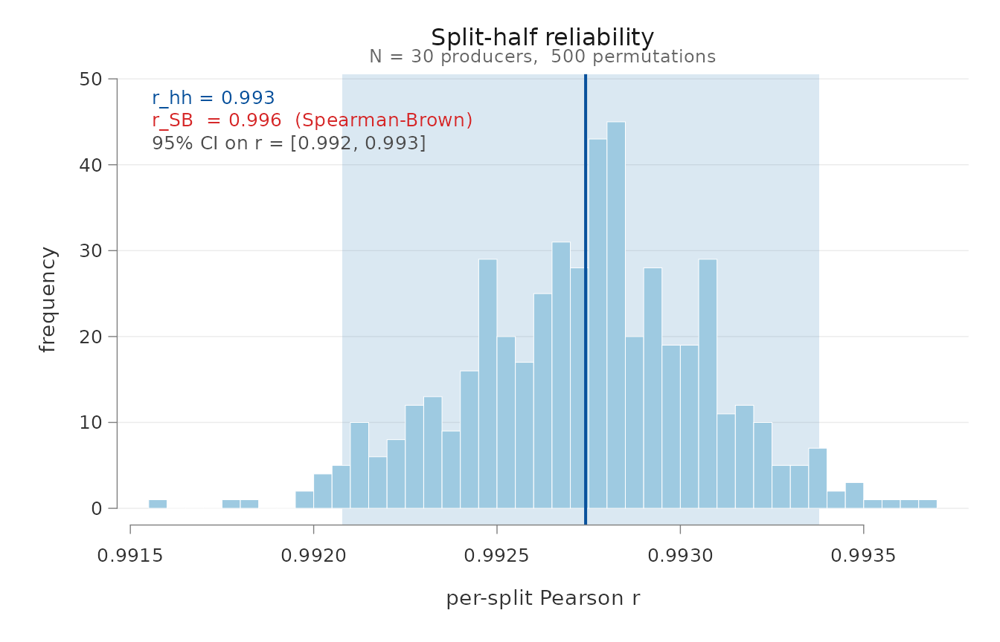
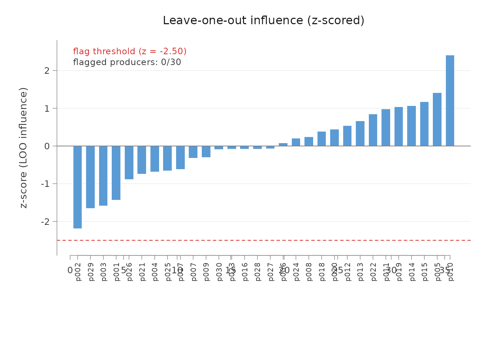
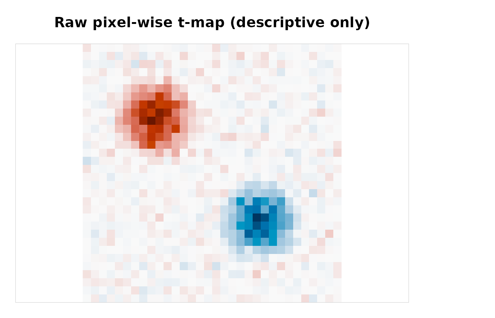
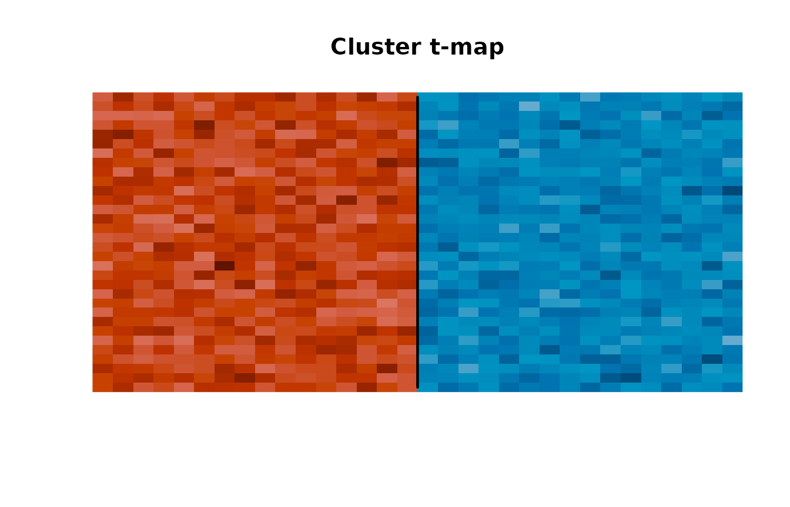
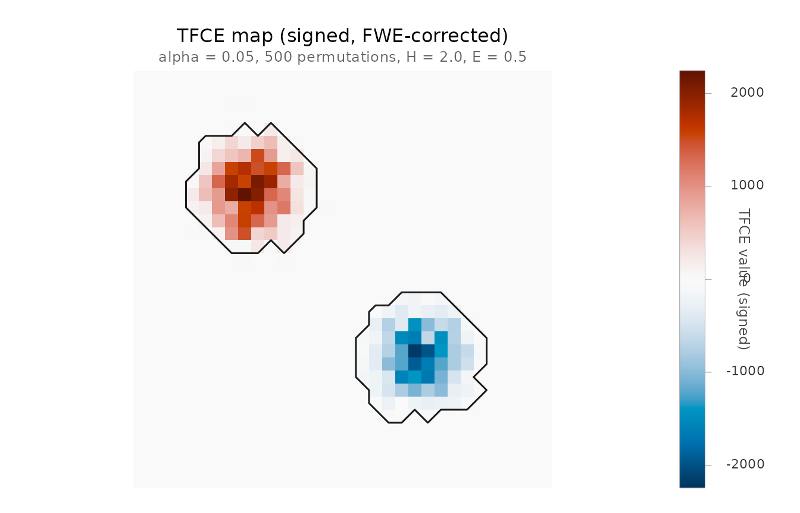
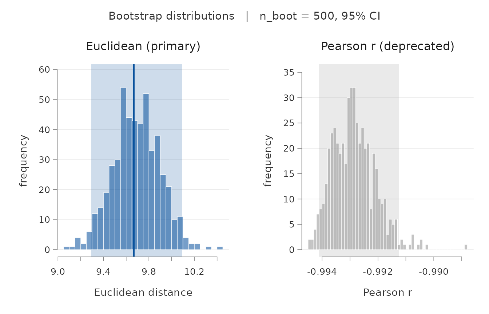

This guide is written for two readers in parallel: the researcher who wants to know “which function do I call for the question I have?”, and the methodologically-curious user who also wants to know “and why should I trust what it returns?”. Each function gets a short plain-language description, the actual signature, a worked example, how to read the output, and the specific footguns to avoid.
1. What rcicrely is - and isn’t
In reverse correlation (RC), participants’ trial-level choices project onto a pool of noise patterns to reconstruct the mental representation they used. The output is a per-producer classification image (CI) plus a group-level CI obtained by averaging.
infoVal (Brinkman et al., 2019) tells you whether a CI
contains more signal than chance. It does not tell you
whether that signal is stable across producers, replicable
on a different subset of producers, or distinguishable from
another condition’s CI.
rcicrely fills that gap with a pixel-level reliability
toolkit:
- Within-condition (how consistent is a condition’s CI across producers?): permuted split-half with Spearman-Brown, leave-one-out sensitivity, ICC(3,1) and ICC(3,k).
- Between-condition (is condition A’s CI distinguishable from condition B’s?): vectorised Welch t per pixel, cluster-based permutation with max-statistic FWER, bootstrap representational dissimilarity.
Critically, none of this requires a phase-2 trait-rating study. The metrics read directly from the pixel-level signal produced by the original producers, sidestepping the two-phase design Cone, Brown-Iannuzzi, Lei, and Dotsch (2021) showed inflates Type I error.
infoVal and rcicrely together
Since v0.2 rcicrely ships its own infoval()
(see §6.5) that handles both 2IFC and Brief-RC with a
single function. The reference distribution is keyed on each producer’s
actual trial count rather than the full pool size — the calibration
matters most for Brief-RC, where producers see only a subset of the
pool, but the function works equivalently for 2IFC. The two checks
remain complementary: infoval() tests presence of signal;
rel_*() tests reliability and discriminability of
signal.
rcicr::computeInfoVal2IFC() is still useful as an
external cross- check for 2IFC data. It pulls the raw $ci
element from the rcicr CI-list internally
(norm(matrix(target_ci[["ci"]]), "f")), so the scaling
settings used at CI generation do not affect its output.
The scaling caveat applies when you compute infoVal
outside that path:
-
rcicrely’s
infoval()expects raw masks. Passres$signal_matrixfromci_from_responses_*()(Mode 2). Do not passres$rendered_cior anything PNG-derived. - Hand-rolled infoVal: same rule. Use the raw mask, not the rendered PNG.
2. Installation
# install.packages("remotes")
remotes::install_github("rdotsch/rcicr") # 2IFC path only
remotes::install_github("olivethree/rcicrely")If you only use Brief-RC you can skip rcicr - the
Brief-RC CI implementation is fully native (Schmitz, Rougier &
Yzerbyt, 2024).
3. Mental model: the signal matrix
Every reliability metric in this package takes a single object: a signal matrix, pixels by participants. Get this right and the rest of the package is a thin shell over it.
A note on the word mask. The term has two distinct meanings in RC work and in this package:
- Noise mask (often shortened to mask or raw mask): the participant’s visual noise contribution — the noise pattern that, when superimposed on the base face, produces their classification image. This is the core statistical object. Every
rel_*()function operates on a matrix of these.- Region mask (or pixel mask): a logical vector marking which pixels to include in an analysis (oval face region, eyes region, etc.). This is what
face_mask()returns and whatinfoval()’smaskargument consumes.Throughout this guide, “mask” without qualification means the noise mask. Pixel selection is always called “region mask” or referenced through
face_mask().
3.1 Raw mask vs. rendered CI
A CI exists in two forms.
A raw mask is the participant’s noise contribution
before any display transformation. It is the object every reliability
metric operates on. For Brief-RC, it is
(noise_pool[, chosen_ids] %*% signed_responses) / n_unique
(Schmitz’s genMask()). For 2IFC, it is rcicr’s
$ci element. Values are typically in a narrow band around
zero (~ +/- 0.05).
The rendered CI is what gets saved to PNG. It is
base + scaling(mask), where scaling() may
stretch the mask to the base image’s range (“matched”), apply a constant
gain, or do nothing. Scaling is a display transformation, not a
statistical one.
Subtracting the base from a rendered CI does not recover the raw mask:
PNG_pixels - base = scaling(mask) (NOT mask)| Metric | Behavior under scaling |
|---|---|
rel_split_half, rel_loo
|
Survives uniform scaling. Breaks under per-CI “matched”. |
rel_dissimilarity (Pearson r half) |
Same. |
rel_dissimilarity (Euclidean half) |
Distorted by any scaling. |
rel_icc |
Distorted by any scaling. |
pixel_t_test,
rel_cluster_test
|
Distorted by per-CI scaling. |
rcicr::computeInfoVal2IFC()
(standard) |
Uses raw $ci internally, unaffected. |
Hand-rolled infoVal (Brief-RC,
custom) |
Distorted by any scaling. Use the raw mask. |
3.2 Two paths to the signal matrix
Mode 1: PNGs on disk Mode 2: raw responses
| |
read_cis() ci_from_responses_2ifc() / _briefrc()
| |
extract_signal() |
| |
scaling(mask) mask <-- raw
| |
+---------> rel_*() <----------+Mode 2 returns the raw mask; Mode 1 cannot, because PNGs on disk have always been rendered. Prefer Mode 2 when raw responses are available. If you must use Mode 1, the package emits a one-time warning per session reminding you of the caveat. To silence:
# acknowledge per-call:
signal <- load_signal_matrix("data/cis/", "data/base.jpg",
acknowledge_scaling = TRUE)
# or silence for the whole session:
options(rcicrely.silence_scaling_warning = TRUE)If you generated the PNGs yourself with
rcicr::generateCI2IFC(scaling = "none"), the rendered
output is effectively raw, and the warning is genuinely a false
positive.
3.3 A concrete demonstration
Here is what scaling does to the same underlying mask.
set.seed(1)
n_pix <- 32L * 32L
n_p <- 20L
mask <- matrix(rnorm(n_pix * n_p, sd = 0.02), n_pix, n_p)
# Render: stretch each column to [-0.5, 0.5] (Schmitz "matched")
rendered <- apply(mask, 2L, function(m) {
rng <- diff(range(m)); if (rng == 0) m else m * (1 / rng)
})
c(
raw_max_range = round(diff(range(mask)), 3L),
rendered_max_range = round(diff(range(rendered)), 3L)
)
#> raw_max_range rendered_max_range
#> 0.162 1.159
# Pearson r between same-column raw and rendered: ~ 1
# (a perfect linear stretch preserves Pearson)
mean(vapply(seq_len(n_p),
function(j) cor(mask[, j], rendered[, j]),
numeric(1L)))
#> [1] 1
# But the variance ratios that drive ICC are very different
var(rowMeans(mask)) # variance of the group mean over pixels
#> [1] 1.923774e-05
var(rowMeans(rendered)) # same metric, on the rendered version
#> [1] 0.001134698Pearson r per column is exactly 1 (linear scaling is correlation-
preserving), but the row-mean variance the ICC formula depends on is
~25x larger on the rendered version. ICC(3,*) computed on rendered data
is therefore not the same ICC computed on the raw mask. The same logic
applies to Euclidean distance and to infoVal.
3.4 Base image preparation
Both 2IFC and Brief-RC pipelines depend on a base face image. Both the visible quality of generated CIs and the reliability statistics that follow are sensitive to how this image is prepared. Requirements:
- Square (e.g. 256x256, 512x512).
- Grayscale — single channel. RGB images error out of rcicr with non-conformable-array messages.
-
Pixel range
[0, 1](the conventionpng::readPNGandjpeg::readJPEGproduce). -
Centred face with eye / nose / mouth roughly at the
geometry the Schmitz oval mask assumes (eyes near the upper third, mouth
near the lower third). The built-in
face_mask(region = ...)geometries assume this layout; custom or off-centre faces need their own mask geometry.
The conventional base face is a morph of several individual faces, which removes idiosyncratic features and centres the geometry. webmorphR (DeBruine, 2022) is the current best-in-class tool for producing one. Typical pipeline:
# install.packages("webmorphR")
library(webmorphR)
stim <- read_stim("path/to/raw_face_images/") |>
auto_delin() |> # auto landmark delineation
align(procrustes = TRUE) |> # Procrustes alignment
crop(width = 0.85, height = 0.85) |> # tight crop around the face
to_size(c(256, 256)) |> # resize to rcicr-friendly size
greyscale() |> # single channel, in [0, 1]
avg() # morph into one average face
write_stim(stim, dir = "stimuli/", names = "base", format = "png")write_stim() produces stimuli/base.png,
ready for
rcicr::generateStimuli2IFC(base_face_files = list(base = "stimuli/base.png")).
For non-square crops, oval-region operations, and feature-aligned masks
(which then plug into load_face_mask()), see
?webmorphR::mask_oval and
?webmorphR::crop_tem. Cite DeBruine (2022).
If you do not have a stack to morph (e.g. you are working from a single base photograph), prepare it by hand: any image editor will do (GIMP / Krita / Photoshop / PowerPoint export). Convert to grayscale, crop to a square that fits the face within the central ~70%, resize to the target dimension, save as PNG.
3.5 A recurring real-world example
The synthetic demos in the function-reference sections below are deliberately small so the vignette knits in seconds. To see what each function looks like on a published RC dataset, the sections that follow each include a short Real example callout drawn from one source:
Oliveira, M., Garcia-Marques, T., Dotsch, R., & Garcia-Marques, L. (2019). Dominance and competence face to face: Dissociations obtained with a reverse correlation approach. European Journal of Social Psychology. https://doi.org/10.1002/ejsp.2569
In Study 1, 200 participants completed a 2IFC reverse-correlation
task with 300 trials each on a 256x256 male base face,
across 10 trait conditions in a between-subjects design (20 producers
per trait). Trait labels: Dominant,
Submissive, Trust, Untrust,
Friendly, Unfriendly,
Intelligent, Unintelligent,
Competent, Incompetent. The full data,
parameter file, and analysis scripts are openly available on OSF: https://doi.org/10.17605/osf.io/hr5pd.
The “Real example” callouts below show the exact call you would make
against this data, plus the output captured from a complete replication
run. The replication itself (including reconstructing the noise matrix
from the legacy rcicr 0.3.0 parameter file) is in
study1_replication.Rmd in the project’s temp/
directory; the vignette chunks below are marked
eval = FALSE because the data is not bundled with the
package, but every output shown is real.
4. Function reference: I/O
The six functions in this section get your data into the package’s
standard signal-matrix shape (pixels x participants). Two
of them — ci_from_responses_2ifc() and
ci_from_responses_briefrc() — take trial-level
response data; before diving into them the shape and coding
conventions for that data deserve a quick callout.
Input response-data shape
One row per trial. The format can be a data.frame,
data.table, tibble, or anything that behaves
like a data frame; the source (CSV, RData, Parquet, programmatic
construction) does not matter, only that the columns below are
present.
| Column | Purpose |
|---|---|
participant_id |
Identifier per producer. Character or integer. |
stimulus |
Stimulus / pool id. Numbering must match what was used at stimulus generation. |
response |
+1 or -1 (see below). |
rt (optional) |
Response time in milliseconds. Not consumed by
rcicrely; useful for rcicrdiagnostics. |
Response coding.
-
2IFC:
response = +1if the participant chose the oriented variant on that trial,-1if the inverted variant. Each trial has its own unique stimulus pair, sostimulusindexes the pair and ranges1:n_trials. -
Brief-RC 12 (Schmitz, Rougier & Yzerbyt, 2024):
on each trial the participant sees 12 noisy faces (6 oriented + 6
inverted from 6 distinct underlying noise patterns) and picks one.
Recorded as one row per trial, with
stimulus= pool id of the chosen pattern andresponse = +1if the oriented variant was chosen,-1if the inverted. The samestimulusid can repeat across trials.
Watch out for the
{0, 1}miscoding. This is the single most common silent failure in RC pipelines: experiment software sometimes records “left” / “right” or “first” / “second” as0/1, and the analyst forgets to recode. Pass{0, 1}responses toci_from_responses_*()and the resulting CI is approximately blank — the math leans heavily on the sign. Both functions error out at the input boundary if responses are not in{-1, +1}. If you see that error, the fix is one line:responses$response <- 2 * responses$response - 1.
Brief-RC: do not record the 11 unselected faces. Each Brief-RC trial shows 12 faces but the participant chooses one. Record only the chosen face (one row per trial, as above). Do not record the 11 unselected faces as additional rows with
response = 0, and do not use the “expanded” 12-rows-per-trial format that weights chosen as+1and unchosen as-1/11. Neither convention matches the SchmitzgenMask()formula (mask = noise[, chosen] %*% chosen_responses / n_unique_chosen) thatci_from_responses_briefrc()implements. Unselected faces’ noise patterns simply do not enter the multiplication; their absence is the zero.
4.1 read_cis()
What it does. Reads every PNG/JPEG in a directory, converts each to grayscale, returns a pixels by participants numeric matrix.
When to use it. You have one CI image per producer
already saved on disk and you want to load them into R as a numeric
matrix. Pair with extract_signal() to get
a base-subtracted signal matrix.
# Make a tiny synthetic dataset on disk to demonstrate against.
demo_dir <- tempfile("ci_demo_"); dir.create(demo_dir)
base_img <- matrix(0.5, 32L, 32L)
png_path <- function(i) file.path(demo_dir, sprintf("p%02d.png", i))
if (requireNamespace("png", quietly = TRUE)) {
for (i in 1:6) {
img <- pmin(pmax(base_img + matrix(rnorm(32 * 32, sd = 0.05), 32, 32),
0), 1)
png::writePNG(img, png_path(i))
}
}
cis <- read_cis(demo_dir, acknowledge_scaling = TRUE)
dim(cis)
#> [1] 1024 6
attr(cis, "img_dims")
#> [1] 32 32Reading the result. nrow = n_pixels,
ncol = n_files. The img_dims attribute carries
c(nrow, ncol) of the original image so plotting helpers
know how to reshape.
Common mistakes. Forgetting to subtract the base
before passing to a rel_* function (use extract_signal() or the
convenience wrapper load_signal_matrix()).
Mixing CIs of different sizes - aborts loudly. Trusting reliability
numbers without reading the raw vs. rendered note (chapter 3).
4.2 extract_signal()
What it does. Subtracts the base image from each column of a CI matrix, so reliability metrics see only the participant-specific contribution.
When to use it. You have the output of read_cis() and you want a
base-subtracted signal matrix.
base_path <- file.path(demo_dir, "_base.png")
png::writePNG(base_img, base_path)
signal <- extract_signal(cis, base_image_path = base_path,
acknowledge_scaling = TRUE)
dim(signal); attr(signal, "img_dims")
#> [1] 1024 6
#> [1] 32 32Reading the result. Same shape as cis,
with the img_dims attribute preserved. Column names
propagate.
Common mistakes. Pointing at the wrong base (a
generated CI PNG of the right size will pass the dimension check).
Treating the result as the raw mask; it is scaling(mask) if
PNGs were rendered with any scaling. See chapter 3.
4.3 load_signal_matrix()
What it does. Convenience wrapper that calls read_cis() and extract_signal() in one
go.
When to use it. Most of the time, when you don’t need to do anything between reading and subtracting (e.g. masking pixels, swapping the base).
signal <- load_signal_matrix(
dir = demo_dir,
base_image_path = base_path,
pattern = "^p[0-9]+\\.png$", # exclude _base.png
acknowledge_scaling = TRUE
)
dim(signal)
#> [1] 1024 64.4 read_noise_matrix()
What it does. Loads the pixels by trials noise pool
used at stimulus generation. Three formats: rcicr .Rdata
(reconstructs from stimuli_params + p), saved
.rds, or whitespace-delimited text.
When to use it. You are computing Brief-RC CIs and
want to load the noise pool once, then reuse it across multiple ci_from_responses_briefrc()
calls.
# from the rcicr rdata (slow - reconstructs each trial via
# rcicr::generateNoiseImage):
noise <- read_noise_matrix("data/rcicr_stimuli.Rdata")
# from a cached rds you saved from the rcicr return value (fast):
noise <- read_noise_matrix("data/noise_matrix.rds")Common mistakes. Assuming the rcicr
.Rdata contains a stimuli object (it does not
- the pixels-by-trials matrix is the return value of
generateStimuli2IFC(return_as_dataframe = TRUE), never
saved to the file). Cache to .rds once and load from there.
Multiple stale .rdata files in one directory: rcicr
timestamps filenames; pick the most recent by mtime if you have
several.
What is in an rcicr .RData
load("rcic_stimuli.Rdata") adds the following objects to
your environment. Names are short and not self-explanatory; the table
below is the field guide.
| Object | Plain-language description |
|---|---|
base_face_files |
Named list of file paths to the original face images. The list names
(e.g. "base") are the labels you pass downstream as
baseimage = "...". |
base_faces |
Base images themselves, loaded as numeric matrices of grayscale
pixels in [0, 1]. One matrix per label; shape
img_size x img_size. |
img_size |
Side length of the (square) images in pixels. |
n_trials |
Number of stimulus pairs (and unique noise patterns) generated. |
noise_type |
Type of noise basis. The rcicr default and only well-tested option
is "sinusoid". |
p |
The noise basis. A list with $patches
(a stack of standard sinusoidal patterns at multiple scales,
orientations, phases) and $patchIdx (an index that maps
positions in a parameter vector to entries in $patches).
Think of $patches as a dictionary of sinusoidal
“ingredients”. |
stimuli_params |
The per-trial recipe for combining p’s
ingredients. A named list of matrices, one per base face. Each row is
one trial; each entry is a contrast weight.
rcicr::generateNoiseImage(stimuli_params[[base]][i, ], p)
reconstructs trial i. |
seed |
Random seed used at generation, for reproducibility. |
label, stimulus_path, trial,
generator_version, use_same_parameters
|
Bookkeeping; not consumed by analysis. |
reference_norms |
A vector of random-responder Frobenius norms. Not present at
first. Created and inserted in place the first time
rcicr::computeInfoVal2IFC() is called on the file. Copy the
rdata first if you want it untouched. |
The load-bearing objects for analysis are base_faces,
stimuli_params, p, and img_size.
The full set of trial-level noise images is not stored;
it is recomputed on demand via generateNoiseImage() (which
read_noise_matrix() calls in a loop). For 256x256 images
and n_trials = 770 (rcicr default) this takes a few
seconds; cache the result with saveRDS() to skip it on
subsequent runs.
Filename note. On macOS the file is saved with a lowercase
.Rdataextension.list.files(pattern = "\\.RData$")will miss it; useignore.case = TRUE.
4.5 ci_from_responses_2ifc()
What it does. Wraps
rcicr::batchGenerateCI2IFC() with all known gotchas
pre-handled, returns a uniform result list.
When to use it. You have 2IFC trial-level responses
and want per-producer CIs in one call. Requires rcicr
installed.
res <- ci_from_responses_2ifc(
responses = my_responses,
rdata_path = "data/rcicr_stimuli.Rdata",
baseimage = "base",
participant_col = "participant_id",
keep_rendered = FALSE # set TRUE if you want $rendered_ci for plotting
)
signal <- res$signal_matrixReading the result. $signal_matrix is
the raw mask (rcicr’s $ci per producer) -
feed this to rel_*. $participants and
$img_dims are convenience metadata.
$rcicr_result is the raw rcicr return value if you want
anything else. $rendered_ci (present only if
keep_rendered = TRUE) is base + scaling(mask)
per producer - visualization only, do not feed to
rel_*.
Common mistakes. Inventing a
base_image_path argument - the base is read from the rdata
via baseimage label, not a path. Passing
$rendered_ci to rel_*. Trusting
scaling = "autoscale" to be “raw” - the rendered output is
scaled even when the signal_matrix isn’t.
4.6 ci_from_responses_briefrc()
What it does. Native Brief-RC 12 implementation of
Schmitz’s genMask() formula. No rcicr::*_brief
calls (those don’t exist in the upstream rcicr v1.0.1).
When to use it. You have Brief-RC 12 trial-level responses and the noise pool used at stimulus generation.
res <- ci_from_responses_briefrc(
responses = my_responses, # one row per trial
rdata_path = "data/rcicr_stimuli.Rdata",
base_image_path = "data/base.jpg",
method = "briefrc12",
scaling = "none" # raw mask only - no $rendered_ci
)
signal <- res$signal_matrixTo also get the rendered CI for plotting:
res <- ci_from_responses_briefrc(
responses = my_responses,
noise_matrix = my_noise,
base_image_path = "data/base.jpg",
scaling = "matched" # Schmitz default for visualisation
)
# res$signal_matrix is the raw mask, feed to rel_*
# res$rendered_ci is base + matched(mask), for PNG / plotting onlyReading the result. $signal_matrix is
always the raw mask, regardless of
scaling. $rendered_ci exists only when
scaling != "none". $participants,
$img_dims, $scaling are metadata.
Common mistakes. Passing the “expanded”
12-rows-per-trial format - Brief-RC 12 is one row per trial (the chosen
face), not 12. Asking for method = "briefrc20" (deferred).
Using $rendered_ci for downstream stats.
4.7 load_face_mask()
What it does. Reads a binary mask image from disk
(PNG or JPEG) and returns a logical vector of length
prod(img_dims) in column-major order — the format the rest
of the package’s mask arguments expect. Companion to face_mask() (parametric /
programmatic) for users who want to work with hand-painted,
webmorphR-generated, or otherwise externally-produced masks.
When to use it. You have a binary mask image (e.g.,
webmorphR::mask_oval() output saved with
write_stim(), a hand-painted GIMP / PowerPoint mask, or any
other source). You want to apply it via infoval()’s
mask argument, via plot_agreement_map()’s
mask argument, or via row-subsetting on a signal
matrix.
fm <- load_face_mask("masks/oval_256.png",
threshold = 0.5,
expected_dims = c(256L, 256L))
mean(fm) # fraction of pixels included
infoval(signal_matrix, noise_matrix, trial_counts,
mask = fm, iter = 1000L, seed = 1L)Reading the result. A logical vector. White / light
pixels (luminance above threshold, default 0.5) become
TRUE; dark pixels become FALSE. RGB images are
converted to luminance via ITU-R BT.709 weights.
Common mistakes. Mask dimensions different from the
analysis image: pass expected_dims = c(nrow, ncol) to catch
this at the input boundary instead of having the math go silently wrong
downstream. Mask saved with the opposite convention (black =
include, white = exclude): the easy fix is
!load_face_mask(...) to invert the logical vector.
5. Function reference: within-condition reliability
For the rest of this guide we’ll work with a small synthetic dataset where two conditions have different latent signals.
set.seed(1)
make_condition <- function(region_top, n_pix = 32L * 32L,
n_p = 30L, snr = 0.3) {
noise <- matrix(rnorm(n_pix * n_p, sd = 0.05), n_pix, n_p)
mask <- if (region_top) {
c(rep(1, n_pix / 2L), rep(0, n_pix / 2L))
} else {
c(rep(0, n_pix / 2L), rep(1, n_pix / 2L))
}
out <- noise + snr * outer(mask, runif(n_p, 0.7, 1.3))
attr(out, "img_dims") <- c(32L, 32L)
out
}
sig_A <- make_condition(region_top = TRUE, n_p = 30L)
sig_B <- make_condition(region_top = FALSE, n_p = 30L)5.1 rel_split_half()
What it does. Estimates how stable a condition’s group CI is across random halves of producers. Reports the per-permutation correlation between halves and the Spearman-Brown projection to the full sample.
When to use it. You want to answer “would I get the
same group CI if I’d run a different half of my participants?”.
r_SB is usually the headline number.
r_sh <- rel_split_half(sig_A, n_permutations = 500L, seed = 1L,
progress = FALSE)
print(r_sh)
#> <rcicrely split-half reliability>
#> N producers: 30
#> n_permutations: 500
#> mean per-split r: 0.993 [0.992, 0.993]
#> Spearman-Brown r_SB: 0.996 [0.996, 0.997]
plot(r_sh)
Permutation distribution of split-half r.
Reading the result. $r_hh = mean
per-split r. $r_sb = Spearman-Brown projected reliability
of the full sample (report this unless asked otherwise).
$ci_95, $ci_95_sb are percentile CIs.
$distribution is the full per-permutation r vector.
Common mistakes. Reporting $r_hh
instead of $r_sb when the audience cares about the
full-sample CI. Running with n_permutations < 200 and
trusting the CIs.
Real example (Oliveira et al., 2019, Study 1). Per-trait group-CI reliability for the Trust and Dominant conditions (20 producers each, 300 trials, 256x256 image):
# sm_trust, sm_dominant: pixels x 20 producer signal matrices
# (built from the response data; see study1_replication.Rmd)
rel_split_half(sm_trust, n_permutations = 500L, seed = 1L)
#> Trust: r_hh = 0.405, r_sb = 0.577, 95% CI on r_sb = [0.539, 0.616]
rel_split_half(sm_dominant, n_permutations = 500L, seed = 1L)
#> Dominant: r_hh = 0.262, r_sb = 0.415, 95% CI on r_sb = [0.380, 0.450]The Trust CI replicates with a clearly higher group-level reliability than the Dominant CI, consistent with the inter-rater agreement ordering reported in Table 1 of Oliveira et al. (2019).
5.2 rel_loo() - influence screening (not a reliability
metric)
What it does. For each producer, correlates the full-sample group CI with the group CI computed without that producer, and returns a z-scored version of those correlations. Producers whose z-score sits clearly below zero have a disproportionate influence on the group pattern and are flagged for inspection.
When to use it. To screen for producers whose individual CI is far from the group pattern - often a sign of response miscoding, fatigue, or a genuinely atypical mental representation. This is a diagnostic; it is not a reliability statistic (see the note at the end of this section).
r_loo <- rel_loo(sig_A, flag_threshold = 2.5, flag_method = "sd")
print(r_loo)
#> <rcicrely leave-one-out influence screening>
#> N producers: 30
#> flag rule: sd (threshold = 2.50)
#>
#> z-scored influence (most influential first):
#> p002 z = -2.19 (r_loo = 0.9999)
#> p029 z = -1.65 (r_loo = 0.9999)
#> p003 z = -1.58 (r_loo = 0.9999)
#> p001 z = -1.43 (r_loo = 0.9999)
#> p026 z = -0.88 (r_loo = 0.9999)
#> ... (25 more)
#>
#> flagged producers: none
#>
#> Note: r_loo values are near 1 by construction because the
#> full-sample and leave-one-out means share (N-1)/N of their
#> data. Use z_scores (relative ordering), not r_loo levels,
#> to interpret influence. This is a diagnostic, not a
#> reliability statistic.The default is mean +/- SD; use flag_method = "mad" for
a median +/- MAD rule that doesn’t get pulled around by the very
outliers it tries to detect:
r_loo_mad <- rel_loo(sig_A, flag_threshold = 2.5, flag_method = "mad")
c(sd_threshold = r_loo$threshold, mad_threshold = r_loo_mad$threshold)
#> sd_threshold mad_threshold
#> 0.9999303 0.9999308
plot(r_loo)
z-scored LOO influence per producer.
For a tidy ordered table of producers by influence, use
rel_loo_z():
head(rel_loo_z(r_loo))
# participant_id correlation z_score flag
# 1 outlier01 0.9714 -3.12 TRUE
# 2 p07 0.9942 -0.84 FALSE
# ...Reading the result. $z_scores is the
informative quantity - plot / report it directly.
$correlations is retained for transparency (values near 1
by construction because the full-sample mean and the leave-one-out mean
share (N - 1) / N of their data). $flagged
lists ids below threshold. $summary_df is a tidy table
sorted by z_score.
Why you should not read $correlations as
reliability. r_loo values are almost always in
[0.95, 0.999] at N = 30, even on very noisy CIs, because
the two vectors being correlated overlap in (N - 1) / N of
their data. A naive reader can misinterpret “LOO r = 0.98” as “the CIs
are 98% reliable”; this is wrong. Report reliability via
rel_split_half() or rel_icc() (§5.1,
§5.3).
Common mistakes. Treating $flagged as
“drop these producers” - investigate first. A flagged producer may have
a genuinely atypical mental representation rather than bad data.
Cross-check with rcicrdiagnostics to rule out
response-coding errors.
Real example (Oliveira et al., 2019, Study 1, Trust
condition). Median raw r_loo is .992 (MAD = .001)
— illustrating the near-1 absolute value structurally. Zero producers
cleared the default MAD-based flag threshold, but the z-scored ordering
is still informative for inspection priority:
loo <- rel_loo(sm_trust, flag_method = "mad")
head(rel_loo_z(loo), 3)
#> participant_id correlation z_score flag
#> 1 18043 0.9905 -1.68 FALSE
#> 2 18051 0.9911 -0.99 FALSE
#> 3 18131 0.9913 -0.79 FALSEThe producers at the top of the z-ordering are the ones whose removal moves the group CI most relative to the rest — even when none clear the flag threshold, this is the inspection order.
5.3 rel_icc()
What it does. Two-way mixed ICC via direct mean squares. Default returns ICC(3,1) and ICC(3,k). Pixels are fixed (the image grid), participants are random (drawn from a producer population).
When to use it. Single-scalar reliability summary. ICC(3,k) is “how stable is the group-mean CI?”, ICC(3,1) is “how informative is one producer’s CI?”.
r_icc <- rel_icc(sig_A, variants = c("3_1", "3_k"))
print(r_icc)
#> <rcicrely ICC>
#> model: ICC(3,*) / two-way mixed; pixels fixed, participants random
#> N targets: 1024 pixels
#> N raters: 30 participants
#>
#> Primary: ICC(3,1) (single-producer reliability)
#> ICC(3,1): 0.8788
#>
#> Secondary: ICC(3,k) (group-mean reliability)
#> ICC(3,k): 0.9954To also report ICC(2,*) for a reviewer who expects it:
r_icc_full <- rel_icc(sig_A, variants = c("3_1", "3_k", "2_1", "2_k"))
print(r_icc_full)
#> <rcicrely ICC>
#> model: ICC(3,*) / two-way mixed; pixels fixed, participants random
#> N targets: 1024 pixels
#> N raters: 30 participants
#>
#> Primary: ICC(3,1) (single-producer reliability)
#> ICC(3,1): 0.8788
#>
#> Secondary: ICC(3,k) (group-mean reliability)
#> ICC(3,k): 0.9954
#>
#> Two-way-random variants (for reviewer comparability only):
#> ICC(2,1): 0.8565
#> ICC(2,k): 0.9944Reading the result. $icc_3_1,
$icc_3_k, $icc_2_1, $icc_2_k (the
latter two NA unless requested). $ms_rows,
$ms_cols, $ms_error are the underlying ANOVA
mean squares for transparency. $model is a description
string the print method shows.
Common mistakes. Asking for ICC(2,) because a
reviewer expects it. ICC(2,) treats pixels as a random sample from
a pixel population, which they aren’t. The numbers are usually close to
ICC(3,*) at high pixel counts but the model is mis-specified - report
both with variants = c("3_1", "3_k", "2_1", "2_k") if
asked.
ICC is strongly scale-sensitive. Use the raw mask only.
Real example (Oliveira et al., 2019, Study 1). Two-way mixed ICC on 65,536-pixel raw masks, 20 producers per condition:
rel_icc(sm_trust)
#> ICC(3,1) = 0.1008, ICC(3,k) = 0.6917
rel_icc(sm_dominant)
#> ICC(3,1) = 0.0489, ICC(3,k) = 0.5068ICC(3,1) — the resolution-comparable single-producer reliability — is clearly higher for Trust than for Dominant, matching the reliability ordering reported in the original paper. ICC(3,k) is high in absolute terms but the resolution asymptote is a known property of ICC(*,k) at large pixel counts; report ICC(3,1) as the primary cross-study comparable number.
5.4 run_within()
What it does. Calls all three within-condition metrics and bundles the result for joint printing/plotting.
within_A <- run_within(
sig_A,
n_permutations = 500L,
seed = 1L,
progress = FALSE
)
print(within_A)
#> <rcicrely report: within>
#> ---
#> * $results$split_half
#> <rcicrely split-half reliability>
#> N producers: 30
#> n_permutations: 500
#> mean per-split r: 0.993 [0.992, 0.993]
#> Spearman-Brown r_SB: 0.996 [0.996, 0.997]
#> ---
#> * $results$icc
#> <rcicrely ICC>
#> model: ICC(3,*) / two-way mixed; pixels fixed, participants random
#> N targets: 1024 pixels
#> N raters: 30 participants
#>
#> Primary: ICC(3,1) (single-producer reliability)
#> ICC(3,1): 0.8788
#>
#> Secondary: ICC(3,k) (group-mean reliability)
#> ICC(3,k): 0.9954$results$split_half and $results$icc are
the two reliability result objects. plot(within_A) lays
them out side by side. Leave-one-out influence screening is run
separately with rel_loo() — it is an influence diagnostic,
not a reliability statistic (see §5.2).
6. Function reference: between-condition inference
The two examples in §5 (sig_A, sig_B) use a
half-image signal, which produces very strong contrasts —
useful for demonstrating that within-condition reliability metrics work,
but it makes the between-condition cluster figures look like two solid
blobs rather than realistic localized clusters. For §6.1–§6.2 we
therefore use a small additional fixture with localized circular
signal: two small “patches” at different positions on a 32 x 32
grid, mimicking how real RC signal tends to cluster around face features
rather than fill the whole image.
set.seed(7)
make_localized <- function(centre, n_p = 30L, n_side = 32L,
snr = 0.20, radius = 0.18, seed = NULL) {
if (!is.null(seed)) set.seed(seed)
rr <- row(matrix(0, n_side, n_side)) / n_side - centre[1]
cc <- col(matrix(0, n_side, n_side)) / n_side - centre[2]
d <- sqrt(rr^2 + cc^2)
m <- as.vector(pmax(0, 1 - d / radius))
out <- snr * outer(m, runif(n_p, 0.7, 1.3)) +
matrix(rnorm(n_side^2 * n_p, sd = 0.05), n_side^2, n_p)
attr(out, "img_dims") <- c(n_side, n_side)
out
}
# Condition A: signal in upper-left; Condition B: signal in lower-right
sig_A_loc <- make_localized(c(0.30, 0.30), n_p = 30L, seed = 11L)
sig_B_loc <- make_localized(c(0.70, 0.70), n_p = 30L, seed = 12L)6.1 pixel_t_test() — building block, not standalone
test
What it does. Computes a Welch’s t-statistic per
pixel between two condition signal matrices. Welch (unequal variances)
is the correct choice because conditions can differ in both N and
per-pixel variance. With paired = TRUE, computes a paired t
on the per-producer difference instead.
Why this function exists, given that 65,000 simultaneous t-tests is statistically meaningless. It is a building block, not an inferential test. There are three legitimate uses:
-
Internal use by
rel_cluster_test(): every permutation of the cluster test recomputes a t-map;pixel_t_test()exposes that computation. Calling it directly is what the cluster test itself calls under the hood. - Diagnostic visualisation: inspecting the raw t-map before running the cluster test helps you pick a sensible cluster- forming threshold and see whether any spatially-coherent structure is even there to test.
- Custom inference pipelines: if you want to implement threshold-free cluster enhancement by hand, define non-standard cluster geometries, or apply a different multiple-comparison correction (FDR, max-T, etc.), this is the input.
Do not threshold the returned vector at
|t| > 1.96 and report “significant pixels”. At 65,536
pixels you would get ~3,300 false positives by chance under H0 (any α),
and the spatial clustering in real CI data makes that even worse. Use
rel_cluster_test() for inference.
t_vec <- pixel_t_test(sig_A_loc, sig_B_loc)
range(t_vec)
#> [1] -13.16874 12.78800A quick visualization makes the output structure obvious. Positive (red) regions indicate where condition A’s signal is stronger than B’s; negative (blue) regions where B’s is stronger than A’s; near- white pixels carry no consistent difference. This is descriptive only — there is no inference yet:
local({
op <- par(mar = c(1, 1, 3, 6) + 0.1)
on.exit(par(op))
n_side <- 32L
tmap <- matrix(t_vec, n_side, n_side)
rng <- max(abs(t_vec))
graphics::image(
seq_len(n_side), seq_len(n_side),
t(tmap[n_side:1L, ]),
col = grDevices::hcl.colors(256L, "RdBu", rev = TRUE),
zlim = c(-rng, rng),
main = "Raw pixel-wise t-map (descriptive only)",
axes = FALSE, xlab = "", ylab = "",
asp = 1, useRaster = TRUE
)
graphics::box(col = "grey80", lwd = 0.5)
})
Raw pixel-wise Welch t-map between two conditions with localized signal patches. Positive (red) = condition A larger; negative (blue) = condition B larger. Note the two distinct hot regions corresponding to the injected signal locations; the rest of the image is dominated by noise. This map is descriptive only — significance comes from rel_cluster_test().
The hot blue/red regions are exactly where the two conditions differ; everything else is noise. To turn this descriptive map into a statement about which differences are reliable, we move on to the cluster test.
6.2 rel_cluster_test() — spatially-localized inference
with FWER control
What it does. Identifies spatially contiguous regions of the image where two conditions differ, with family-wise error control across the whole image (so you do not over-claim significance from the kind of mass-testing problem §6.1 warned about).
The vocabulary. Three terms are unavoidable; here is what each one means in plain language.
Cluster-forming threshold (
cluster_threshold, default2.0). A t-value cutoff used at the first step: any pixel with|t| > 2.0is “in”, everything else is “out”. This is not a significance threshold — it is the cutoff for deciding which pixels are even candidates for being part of a cluster. Significance is decided afterwards. Lower thresholds catch more diffuse signal; higher thresholds isolate sharper peaks.-
4-connectivity. Once we have a binary “in / out” image, we group adjacent “in” pixels into clusters. 4-connectivity treats two pixels as adjacent only if they share an edge (up / down / left / right) — the four orthogonal neighbours. 8-connectivity, the alternative, also counts diagonals. 4-connectivity is the more conservative choice: a one-pixel-wide diagonal stripe is split into isolated pixels and forms no cluster, whereas 8-connectivity would chain them. Suits face-CI signal, which tends to be contiguous in orthogonal directions.
4-connectivity: 8-connectivity: . X . X X X X o X X o X . X . X X X (o is the centre, X are neighbours, . are non-neighbours) Cluster mass (
mass). For each candidate cluster, mass is the sum of t-values within it. Not pixel count. This means a small cluster with very strong t-values can have the same mass as a large cluster with weak t-values — the metric mixes extent (how big) and magnitude (how strong). Cluster mass was introduced by Maris & Oostenveld (2007) and is the dominant choice in EEG / MEG / fMRI cluster-permutation work.Stratified label permutation. To build the null distribution, we randomly relabel which producers belong to A vs. B many times, recompute the t-map, find clusters, and record the maximum cluster mass per permutation. “Stratified” means we preserve the original group sizes
(N_A, N_B)exactly each time, so the Welch denominator is not perturbed under H0. Withpaired = TRUE, the permutation is sign-flip on matched pairs instead.Max-statistic FWER. Family-wise error rate = the probability of any false positive across the entire image. By comparing observed cluster mass to the maximum mass under each permutation, we directly bound that probability at
alpha. No per-pixel correction is needed; the cluster-level p-value is already FWE-corrected.
When to use it. “Where in the image do these two conditions differ, and how confident am I that the differences are not noise?”
clust <- rel_cluster_test(
sig_A_loc, sig_B_loc,
img_dims = c(32L, 32L),
n_permutations = 500L,
cluster_threshold = 2.0,
alpha = 0.05,
seed = 1L,
progress = FALSE
)
print(clust)
#> <rcicrely cluster-based permutation test>
#> N_A = 30, N_B = 30
#> image dims: 32 x 32
#> cluster threshold: |t| > 2.00
#> n_permutations: 500
#> alpha: 0.05
#> clusters found: 46 (2 significant)
#>
#> cluster_id direction mass size p_value significant
#> 11 neg -466.77 79 0.000 TRUE
#> 14 neg -4.95 2 0.452 FALSE
#> 20 neg -3.55 1 0.828 FALSE
#> 1 neg -3.11 1 0.930 FALSE
#> 10 neg -2.95 1 0.966 FALSE
#> 4 neg -2.87 1 0.984 FALSE
#> 8 neg -2.82 1 0.986 FALSE
#> 17 neg -2.59 1 1.000 FALSE
#> 15 neg -2.59 1 1.000 FALSE
#> 13 neg -2.51 1 1.000 FALSE
#> 16 neg -2.42 1 1.000 FALSE
#> 7 neg -2.42 1 1.000 FALSE
#> 5 neg -2.31 1 1.000 FALSE
#> 23 neg -2.28 1 1.000 FALSE
#> 2 neg -2.26 1 1.000 FALSE
#> 6 neg -2.21 1 1.000 FALSE
#> 24 neg -2.20 1 1.000 FALSE
#> 22 neg -2.17 1 1.000 FALSE
#> 21 neg -2.13 1 1.000 FALSE
#> 18 neg -2.12 1 1.000 FALSE
#> 19 neg -2.08 1 1.000 FALSE
#> 9 neg -2.07 1 1.000 FALSE
#> 12 neg -2.05 1 1.000 FALSE
#> 3 neg -2.03 1 1.000 FALSE
#> 2 pos 481.53 76 0.000 TRUE
#> 3 pos 4.78 2 0.466 FALSE
#> 11 pos 4.67 2 0.534 FALSE
#> 21 pos 3.03 1 0.954 FALSE
#> 15 pos 2.94 1 0.970 FALSE
#> 19 pos 2.65 1 0.998 FALSE
#> 14 pos 2.64 1 0.998 FALSE
#> 4 pos 2.54 1 0.998 FALSE
#> 1 pos 2.51 1 0.998 FALSE
#> 22 pos 2.48 1 1.000 FALSE
#> 10 pos 2.44 1 1.000 FALSE
#> 7 pos 2.38 1 1.000 FALSE
#> 6 pos 2.37 1 1.000 FALSE
#> 5 pos 2.31 1 1.000 FALSE
#> 17 pos 2.27 1 1.000 FALSE
#> 8 pos 2.15 1 1.000 FALSE
#> 20 pos 2.15 1 1.000 FALSE
#> 18 pos 2.08 1 1.000 FALSE
#> 16 pos 2.06 1 1.000 FALSE
#> 9 pos 2.02 1 1.000 FALSE
#> 13 pos 2.00 1 1.000 FALSE
#> 12 pos 2.00 1 1.000 FALSE
plot(clust)
Pixel-wise Welch t-map (red = condition A larger, blue = condition B larger) with significant cluster contours overlaid in black. The two clusters correspond to the two injected signal patches, and only those clusters are FWE-corrected significant at alpha = 0.05; the surrounding noise does not produce false-positive clusters thanks to the max-statistic correction.
Reading the result. $observed_t is the
raw t-map. $clusters is a data.frame with one row per
candidate cluster, columns: cluster_id,
direction ("pos"/"neg"),
mass (sum of t-values), size (pixel count),
p_value (mass percentile against the null),
significant (logical). $pos_labels /
$neg_labels are integer matrices the same shape as the
image, where each non-zero value tags a cluster — useful for custom
plotting overlays. $null_distribution exposes the
per-permutation max masses.
TFCE alternative. For threshold-free cluster
enhancement, which integrates across many cluster-forming thresholds and
removes the arbitrary cutoff choice, set method = "tfce".
See §6.5 of the deep-dive tutorial for the full mathematical
detail and §6.7 below for the agreement-map relative.
clust_tfce <- rel_cluster_test(
sig_A_loc, sig_B_loc,
img_dims = c(32L, 32L),
method = "tfce",
n_permutations = 500L,
tfce_n_steps = 50L,
alpha = 0.05,
seed = 1L,
progress = FALSE
)
plot(clust_tfce)
TFCE-enhanced map (no cluster-forming threshold to choose). Significant pixels are outlined in black. Compare against the threshold-based version above — TFCE generally has more power for diffuse, low-amplitude signal because it integrates evidence across many thresholds rather than committing to one.
Common mistakes.
- Reading
cluster_threshold = 2.0as “p < 0.05”. It is the t-cutoff for forming candidate clusters, not the cluster significance threshold. - Trusting cluster p-values with
n_permutations < 1000(the function warns below 100). Tail probabilities below 0.01 need more permutations than that. - Using
pixel_t_test()standalone for inference (§6.1).
Real example (Oliveira et al., 2019, Study 1). A
central claim of the original paper was that the Trust and Friendly CIs
overlap strongly while the Dominant and Competent CIs do not. Both
threshold and TFCE versions of the cluster test, run on the per-producer
signal matrices for the relevant pairs, support this in
spatially-localized terms (FWER-controlled). The full output is in
temp/study1_replication.Rmd; the runnable form is:
rel_cluster_test(sm_dominant, sm_competent,
img_dims = c(256L, 256L),
method = "tfce",
n_permutations = 500L,
tfce_n_steps = 50L,
seed = 1L)Pair this with rel_dissimilarity() (next section) for
the overall-magnitude part of the same claim.
6.3 rel_dissimilarity()
What it does. Two scalar dissimilarity metrics between the two conditions’ group CIs - Pearson correlation and Euclidean distance - each with percentile bootstrap CIs.
When to use it. “How different are these two
conditions overall?” with uncertainty. Pair with
rel_cluster_test() for spatial information.
diss <- rel_dissimilarity(
sig_A, sig_B,
n_boot = 500L,
ci_level = 0.95,
seed = 1L,
progress = FALSE
)
print(diss)
#> <rcicrely representational dissimilarity>
#> n_boot: 500
#> CI level: 95%
#> n_pixels: 1024
#>
#> Primary: Euclidean distance between group-mean CIs
#> Euclidean = 9.668 [9.293, 10.089] SE = 0.207
#> Euclidean / sqrt(n) = 0.3021 (resolution-normalised)
#>
#> [Deprecated - will be removed in v0.3]
#> Pearson r = -0.996 [-0.994, -0.991] SE = 0.001
#> Note: correlation between two base-subtracted CIs has a
#> positive baseline from shared image-domain structure and is
#> not a clean similarity score. Prefer Euclidean distance.
plot(diss)
Bootstrap distributions for Pearson r and Euclidean distance.
Reading the result. $correlation,
$euclidean are the observed values; $ci_cor,
$ci_dist the percentile CIs; $boot_cor,
$boot_dist the full bootstrap distributions.
Common mistakes. Reading $correlation
near 1 as “the conditions look the same” - identical spatial patterns
with different magnitudes give r ~ 1; the magnitude difference shows up
in $euclidean. $euclidean scales with
sqrt(n_pixels) so it is a within-study metric, not comparable across
resolutions.
Real example (Oliveira et al., 2019, Study 1). Euclidean distances between group-mean CIs on 256x256 raw masks, 500 bootstrap replicates each:
rel_dissimilarity(sm_trust, sm_friendly, n_boot = 500L, seed = 1L)
#> Euclidean = 16.81, 95% CI [19.26, 24.86], normalised = 0.0657
rel_dissimilarity(sm_dominant, sm_competent, n_boot = 500L, seed = 2L)
#> Euclidean = 21.08, 95% CI [21.53, 30.75], normalised = 0.0823The Dominant-vs-Competent contrast yields a substantially larger Euclidean distance than Trust-vs-Friendly, the same direction as the published group-CI Pearson correlations (.69 for Trust x Friendly, -.22 for Dominant x Competent in Table 2 of the paper). The two metrics report the same pattern from different angles — Pearson is the within-shape question, Euclidean is the how-far-apart question.
Comparing multiple contrasts side-by-side. When you
have several rel_dissimilarity() results and want one
figure that shows whether their CIs overlap, use
compare_dissimilarity(). It draws each contrast as a
horizontal point with its 95% CI and the underlying bootstrap density,
so the reader can read overlap (or non-overlap) at a glance. Useful for
paper figures.
d_TF <- rel_dissimilarity(sm_trust, sm_friendly, n_boot = 500L, seed = 1L)
d_DC <- rel_dissimilarity(sm_dominant, sm_competent, n_boot = 500L, seed = 2L)
compare_dissimilarity(
"Trust vs Friendly" = d_TF,
"Dominant vs Competent" = d_DC
)6.4 run_between()
What it does. Calls both between-condition metrics and bundles the result.
between_AB <- run_between(
sig_A, sig_B,
img_dims = c(32L, 32L),
n_permutations = 500L,
n_boot = 500L,
seed = 1L,
progress = FALSE
)
print(between_AB)
#> <rcicrely report: between>
#> ---
#> * $results$cluster_test
#> <rcicrely cluster-based permutation test>
#> N_A = 30, N_B = 30
#> image dims: 32 x 32
#> cluster threshold: |t| > 2.00
#> n_permutations: 500
#> alpha: 0.05
#> clusters found: 2 (2 significant)
#>
#> cluster_id direction mass size p_value significant
#> 1 neg -9886 512 0 TRUE
#> 1 pos 9807 512 0 TRUE
#> ---
#> * $results$dissimilarity
#> <rcicrely representational dissimilarity>
#> n_boot: 500
#> CI level: 95%
#> n_pixels: 1024
#>
#> Primary: Euclidean distance between group-mean CIs
#> Euclidean = 9.668 [9.293, 10.089] SE = 0.207
#> Euclidean / sqrt(n) = 0.3021 (resolution-normalised)
#>
#> [Deprecated - will be removed in v0.3]
#> Pearson r = -0.996 [-0.994, -0.991] SE = 0.001
#> Note: correlation between two base-subtracted CIs has a
#> positive baseline from shared image-domain structure and is
#> not a clean similarity score. Prefer Euclidean distance.6.5 infoval() - producer-level signal vs. chance
What it does. For each producer, compares the
Frobenius norm of their raw mask to a reference distribution simulated
from random sign-weighted aggregations of the same noise pool, at that
producer’s trial count. Returns a per-producer z-score against the
reference’s median / MAD, plus the full reference distribution and
metadata. A single function handles both 2IFC and Brief-RC; the
difference lives entirely in what you pass as
noise_matrix.
When to use it. As a complement to the
rel_*() reliability checks. infoval() answers
does each producer’s mask carry more signal than chance?;
rel_*() answers how reliable / how distinguishable is
the group-level pattern?. They report different things and a study
should usually carry both.
# Brief-RC route: infoval() takes the raw signal_matrix from
# ci_from_responses_briefrc() and the noise_matrix used to generate
# the trials.
res <- ci_from_responses_briefrc(responses, rdata_path = "rcic.Rdata",
base_image_path = "base.jpg")
trial_counts <- with(responses,
setNames(table(participant_id),
names(table(participant_id))))
iv <- infoval(res$signal_matrix, noise_matrix,
trial_counts = trial_counts,
iter = 10000L, cache_path = "infoval_cache.rds",
seed = 1L)
print(iv)Reading the result. $infoval is a
per-producer z-score vector; z > 1.96 is roughly
one-tailed p < .025 against the chance reference.
$norms is the raw observed Frobenius norm per producer.
$reference holds the simulated reference norm vectors keyed
by trial count. $ref_median and $ref_mad are
the centre / spread used for z computation.
Troubleshooting low or negative infoval z-scores
If you compute infoval() and find that most or
all per-producer z-scores sit well below 1.96 — sometimes
negative — even though spot checks suggest producers are doing the task
seriously, that is a common pattern, not a sign the data is bad. Five
reasons in order of how often they apply:
Frobenius norm is a global energy statistic. It sums squared pixel deviations across the entire image. Real internal representations are usually spatially sparse (eyes, mouth, jaw — maybe 10-30% of pixels), so the 70-90% of “background” pixels contribute noise of similar magnitude to the chance reference and dilute the signal-bearing region. A producer with strong, visually-obvious signal in the eyes can have a Frobenius norm only marginally above the random reference.
The reference is strict because it lives in the same subspace. Both the observed mask and the reference are projections onto the same low-dimensional sinusoidal noise basis. The reference distribution has plenty of overall energy by construction, so the only way to clear z = 1.96 is to align signs with a specific subset of patterns more than chance.
Per-trial signal is small. Each 2IFC choice contributes a tiny signal increment relative to the per-trial noise amplitude. With 300 trials the SNR gain is √300 ≈ 17×, but if per-trial signal is ~5% of per-trial noise, post-aggregation effective SNR is barely visible to a global energy measure.
Without a face mask, infoVal counts background.
face_mask()ships an oval mask that approximates the Schmitz 2024 face region. Applying it (infoval(..., mask = face_mask(c(256, 256)))) concentrates the norm on signal-bearing pixels and typically lifts z-scores noticeably.Group-level CIs have much higher z than individual CIs. Averaging 20 producers’ masks reduces noise by √20 ≈ 4.5×, so the group-mean CI’s effective trial count is
300 × 20 = 6000for a 20-producer condition. The infoVal of the group-mean CI (withtrial_counts = setNames(300L * n_producers, "group")) is usually 5-10× the per-producer median. This is what Brinkman et al. (2019) reported. Per-producer infoVal is noisier and lower; this is structural, not a defect.
Diagnostic recipe
sm <- res$signal_matrix
tc <- setNames(rep(300L, ncol(sm)), colnames(sm))
# 1. Compare the observed and reference norm distributions
iv <- infoval(sm, noise_matrix, tc, iter = 1000L,
cache_path = "iv.rds", seed = 1L)
ref <- iv$reference[[as.character(tc[1])]]
cat(sprintf("observed median = %.4f, reference median = %.4f, %% above = %+.1f%%\n",
median(iv$norms), median(ref),
100 * (median(iv$norms) - median(ref)) / median(ref)))
# 2. Apply the face mask
fm <- face_mask(c(256L, 256L))
iv_masked <- infoval(sm, noise_matrix, tc, mask = fm,
iter = 1000L, cache_path = "iv_masked.rds",
seed = 1L)
median(iv_masked$infoval) # typically higher than iv
# 3. Group-mean CI (the headline number to report)
group <- matrix(rowMeans(sm), ncol = 1, dimnames = list(NULL, "group"))
tc_grp <- setNames(300L * ncol(sm), "group")
iv_grp <- infoval(group, noise_matrix, tc_grp, iter = 1000L,
seed = 1L)
iv_grp$infoval # usually large (e.g. > 5)
# 4. Sanity check with a simulated random responder
set.seed(0)
random_resp <- sample(c(-1, 1), 300L, replace = TRUE)
random_mask <- (noise_matrix %*% random_resp) / 300
iv_rand <- infoval(matrix(random_mask, ncol = 1,
dimnames = list(NULL, "rand")),
noise_matrix,
setNames(300L, "rand"),
iter = 1000L, seed = 1L)
iv_rand$infoval # should be ~ 0 within MAD noiseNegative z values mean the observed mask has less total Frobenius energy than the chance reference. This is not “negative signal” — it is consistent with a producer whose responses align with a structured low-rank template, since aligning consistently with one template can reduce the effective dimensionality of the mask and shrink its overall norm. A negative z is therefore informative: a clearly negative z (say, < −2) on a producer who otherwise shows good behaviour usually points to one of:
- The producer responded coherently but to a different feature than the trait you intended (idiosyncratic representation).
- The reference distribution is mis-calibrated for your design (see
the v0.2.1 calibration note in the
?infovalhelp page — early v0.2.0 versions sampled stim ids with replacement and inflated reference norms, biasing per-producer z below zero on cooperative producers). - Per-producer trial count is too low to beat chance for any meaningful statistic, even with real signal — fall back to the group-mean infoVal as the publishable number.
Reporting recommendation. Report (i) the group-mean infoVal z and (ii) the proportion of producers whose individual z clears 1.96 (with the face mask). Do not report only the median per-producer z and treat values < 1.96 as evidence of “no signal” — that conflates the per-producer noisiness of the metric with the group-level question of whether the CI carries information.
Real example (Oliveira et al., 2019, Study 1, Trust condition). The same diagnostic recipe above, run on real published data. The 20 individual producers were each shown 300 trials (so the trial-count-matched reference is simulated at 300):
# Per-producer infoVal
tc <- setNames(rep(300L, 20L), colnames(sm_trust))
iv <- infoval(sm_trust, noise_matrix, tc, iter = 1000L, seed = 1L)
#> per-producer: median z = 0.35, range [-1.69, 2.30], n above 1.96 = 2/20
# Group-mean CI infoVal (effective n_trials = 300 x 20 = 6000)
group <- matrix(rowMeans(sm_trust), ncol = 1,
dimnames = list(NULL, "TRUST_group"))
iv_grp <- infoval(group, noise_matrix,
setNames(6000L, "TRUST_group"),
iter = 1000L, seed = 1L)
#> group-mean CI z = 11.39
# Face-mask lift on per-producer z
iv_masked <- infoval(sm_trust, noise_matrix, tc,
mask = face_mask(c(256L, 256L)),
iter = 1000L, seed = 1L)
#> masked median = 0.50 (vs unmasked median = 0.35; lift = +0.15)This is exactly the pattern described in the troubleshooting list above: per-producer z is centred around 0.35 with only 2 of 20 producers individually above the 1.96 threshold — and yet the group-mean CI z is 11.39, unmistakable signal. The published Trust/Friendly correlation of .69 (Table 2 of the paper) and the observable trait dissociations in the group CIs (Figure 1 of the paper) are both consistent with the group-level z, not with reading the per-producer median as a “weak signal” verdict. Reporting recommendation in practice: “the group-mean classification image showed strong informational value (z = 11.39, n_eff = 6000); 2 of 20 producers individually exceeded z = 1.96.”
Calibration note. This output reflects the v0.2.1 fix in
simulate_reference_norms()(sample stim ids without replacement whenn_trials <= n_pool). v0.2.0 over-inflated the reference norm and gavemedian z = -1.54for the same data — a bug uncovered while replicating Oliveira et al. (2019), Study 1. If you computed infoVal under v0.2.0 and got systematically negative z-scores, re-run after upgrading.
6.6 Region-by-region analyses with face_mask()
face_mask() accepts a region argument that
returns a logical vector for one of: "full" (default),
"eyes", "nose", "mouth",
"upper_face", "lower_face". The companion load_face_mask() reads
an externally- generated mask (e.g., from
webmorphR::mask_oval() or a hand-painted PNG) into the same
logical-vector format. Pass either to infoval() directly
via the mask argument, or apply it via row-subsetting on a
signal matrix to compute any rel_*() metric on a single
anatomical region:
Apply the mask symmetrically. This is the single most important rule when working with masks in any reliability or discriminability analysis: the same mask must enter both arms of any comparison. For
infoval(), pass the mask via themaskargument so observed and reference Frobenius norms are restricted to the same pixels. Forrel_*()reliability metrics, subset the signal matrix (signal_matrix[mask, , drop = FALSE]) and compute all metrics on the same subsetted matrix. Forrel_cluster_test()/rel_dissimilarity(), subset both condition matrices identically before passing them in. Mixing a masked observed value with an unmasked reference (or two conditions masked differently) yields a number with no defensible interpretation.
img <- c(256L, 256L)
m_full <- face_mask(img, region = "full")
m_eyes <- face_mask(img, region = "eyes")
m_mouth <- face_mask(img, region = "mouth")
# Region-restricted ICC: pass the masked rows of the signal matrix
rel_icc(sm_trust[m_eyes, , drop = FALSE])
rel_icc(sm_trust[m_mouth, , drop = FALSE])
# Region-restricted infoVal: pass the mask directly
infoval(sm_trust, noise_matrix,
trial_counts = setNames(rep(300L, 20L), colnames(sm_trust)),
iter = 1000L, mask = m_eyes, seed = 1L)
infoval(sm_trust, noise_matrix,
trial_counts = setNames(rep(300L, 20L), colnames(sm_trust)),
iter = 1000L, mask = m_mouth, seed = 1L)Region geometries are heuristic approximations matched to a typical
centred face on a square base image. For non-default base images, tune
the full-face oval via centre, half_width,
half_height; sub-region positions scale relative to that
ellipse.
Real example (Oliveira et al., 2019, Study 1, Trust condition). Region-restricted ICC(3,1) on the same 20-producer signal matrix shows where producer agreement is concentrated:
# rel_icc(sm_trust[face_mask(c(256L,256L), region = R), , drop = FALSE])
#> region n_pixels ICC(3,1) ICC(3,k)
#> full 32,192 0.109 0.710
#> eyes 1,022 0.069 0.595
#> nose 770 0.028 0.363
#> mouth 966 0.092 0.670
#> upper_face 16,096 0.087 0.655
#> lower_face 16,096 0.130 0.749Producer agreement is strongest in the lower-face region (mouth + jaw), weakest in the nose. The pattern aligns with the visible features of the published Trust group CI (Figure 1 of the paper).
Region-restricted infoVal on the same data:
# infoval(sm_trust, noise_matrix, tc, mask = face_mask(c(256L,256L), region = R), ...)
#> region median z range n above 1.96
#> full +0.51 [-1.81, +3.13] 4/20
#> eyes +0.55 [-0.98, +1.56] 0/20
#> mouth +0.52 [-0.76, +4.67] 3/20Regional infoVal works as a sensitivity check: if a region’s median z is markedly lower than the full-face median, the group signal is not concentrated in that region; if it is markedly higher, the region carries more than its pixel-share of the signal. For Trust, the eye and mouth regions both replicate the full-face median; the eye region’s per-producer range is narrower, suggesting producers agree on direction in the eye region but the energy is modest.
Critical-review note. Region masks are heuristic.
They do not account for individual differences in face geometry (the
base face’s eyes, nose, mouth occupy different pixels on different
photographs), and they assume the typical centred-face layout shipped
with most rcicr stimulus pools. For studies using non-centred or
differently-proportioned base faces, define a custom mask via
ellipse_mask() (internal) or by hand-curating a logical
pixel vector. The geometries shipped here are calibrated to KDEF- style
256x256 male faces and should reproduce reasonably for most published RC
datasets.
6.7 Visualising producer agreement:
plot_agreement_map()
A complement to the group-mean CI image: a heatmap of where producers in a single condition agree on the direction of signal. Each pixel’s colour is proportional to a one-sample t-statistic across producers (mean / standard error), so positive saturation means agreement on positive signal and negative saturation means agreement on negative signal.
# Continuous t-map (default)
plot_agreement_map(sm_trust)
# Region-restricted, mouth only
plot_agreement_map(sm_trust,
mask = face_mask(c(256L, 256L), region = "mouth"))
# Thresholded view (only pixels with |t| > 2.0 are coloured)
plot_agreement_map(sm_trust, threshold = 2.0)Use this for descriptive figures of where producers
agree within a condition; pair with rel_cluster_test()
(which is the inferential counterpart for
between-condition pixel-level contrasts).
7. Brief-RC end-to-end
Schmitz, Rougier & Yzerbyt (2024) introduced Brief-RC 12: each
trial shows 12 noisy faces (6 oriented, 6 inverted, drawn from a shared
noise pool); participant picks one. The recorded format is one row per
trial, columns participant_id, trial,
stimulus (chosen pool id), response
(+1 if oriented, -1 if inverted).
rcicrely’s implementation is native (no rcicr
_brief functions, which don’t exist in the upstream rcicr
v1.0.1).
# 1. Generate the noise pool (once per project) - heavy step.
rcicr::generateStimuli2IFC(
base_face_files = list(base = "data/base.jpg"),
n_trials = 600L, # becomes the Brief-RC pool size
img_size = 256L,
stimulus_path = "data/stim",
label = "mystudy",
ncores = 1L, # macOS-safe default
return_as_dataframe = TRUE, # capture the noise matrix!
seed = 1L
) |> saveRDS("data/noise_matrix.rds") # cache for fast loading
# 2. Collect Brief-RC responses in the per-trial format.
# 3. Compute individual CIs.
res <- ci_from_responses_briefrc(
responses = my_brief_rc_responses,
noise_matrix = readRDS("data/noise_matrix.rds"),
base_image_path = "data/base.jpg",
method = "briefrc12",
scaling = "matched" # also rendered for plotting
)
# 4. Reliability assessment.
within <- run_within(res$signal_matrix, seed = 1L)
between <- run_between(res_A$signal_matrix, res_B$signal_matrix,
seed = 1L)
# 5. Save rendered CI to PNG (visualization only - DO NOT use for stats)
if (requireNamespace("png", quietly = TRUE)) {
for (j in seq_along(res$participants)) {
img <- matrix(res$rendered_ci[, j], res$img_dims[1], res$img_dims[2])
img <- pmin(pmax(img, 0), 1)
png::writePNG(img, sprintf("plots/p%02d.png", j))
}
}Brief-RC infoVal ships in v0.2 as
infoval() (see §6.5). The reference distribution is matched
to each producer’s recorded trial count (number of
(stim, +/-1) contributions entering the mask), not to the
pool size. For 2IFC the two are equal so the original rcicr default is
fine; for Brief-RC each producer typically records fewer choices than
there are pool items, so a pool-size reference biases infoVal downward.
infoval() closes that calibration gap. Pass the raw
mask (res$signal_matrix) — not
res$rendered_ci or a PNG.
A note on what “subset” means here. Brief-RC’s whole point is that
each trial is cognitively richer than 2IFC: the producer
integrates 12 noisy faces of context, not 2. So Brief-RC producers do
not see less of the pool at the perceptual level. What
the infoval() reference is matched to is the number of
recorded choices that enter the mask — one
(stim, +/-1) per trial — which is typically smaller than
the pool size in Brief-RC studies. This is the right calibration for the
magnitude statistic infoVal computes; it is not a claim about cognitive
exposure.
A note on cross-paradigm comparisons. infoVal measures the
magnitude of the mask (Frobenius norm) against a chance
reference. Brief-RC’s purported cognitive benefit — better target
localisation per trial — may produce a more accurate but not necessarily
larger mask, and a magnitude statistic does not distinguish those. Treat
absolute Brief-RC vs 2IFC z-score differences with caution.
rel_split_half()/rel_icc() (signal stability)
and rel_cluster_test()/rel_dissimilarity()
(between- condition separability) are the right complements when you
care about pattern accuracy rather than magnitude.
8. Interpreting results and common pitfalls
Sample size. rcicrely aborts below 4
producers per condition and warns below 30; a sample of N >= 60
producers is recommended for stable reliability assessment. At N = 10
the metrics are computable but their CIs are wide.
Split-half. Think of r_hh ~ 0.3 as
weak, 0.5 as moderate, 0.7+ as strong producer-level consistency.
r_SB is what to report when asked about the full-sample
CI.
LOO flagging. A flag is a starting point for
investigation, not a verdict. Use flag_method = "mad" if
the SD rule is dominated by the very outliers it tries to find.
ICC(3,) vs ICC(2,). Numerically close at
high pixel counts but ICC(3,*) is the correctly-specified model. Don’t
swap because of a reviewer; report both with
variants = c("3_1", "3_k", "2_1", "2_k") if pressed.
Cluster threshold != p-value.
cluster_threshold = 2.0 is the t-cutoff for forming
clusters. Significance is decided by mass relative to the null. The
default is roughly two-tailed p < 0.05 at large df, but at small N it
under-rejects - inspect the t histogram.
Raw vs. rendered CIs. This package’s reliability
math is correct given a raw signal matrix. Mode 1 (PNGs
on disk) loads scaling(mask) instead of mask;
results will differ from what raw responses would produce. The size of
the difference depends on the scaling that was applied at PNG-write
time. Mode 2 is the safe path.
infoVal correctness.
rcicr::computeInfoVal2IFC() extracts the raw
$ci from its input CI-list internally, so the standard 2IFC
path is safe regardless of scaling. The pitfall is in
hand-rolled infoVal implementations, for Brief-RC, or for
any custom code that consumes a bare matrix, which must be fed the raw
mask. Feeding rendered/scaled values silently distorts the reference
comparison and produces wrong significance verdicts.
9. References
- Brinkman, L., Todorov, A., & Dotsch, R. (2017). Visualising mental representations: A primer on noise-based reverse correlation in social psychology. European Review of Social Psychology, 28(1), 333-361. https://doi.org/10.1080/10463283.2017.1381469
- Brinkman, L., Goffin, S., van de Schoot, R., van Haren, N. E. M., Dotsch, R., & Aarts, H. (2019). Quantifying the informational value of classification images. Behavior Research Methods, 51(5), 2059-2073. https://doi.org/10.3758/s13428-019-01232-2
- Cone, J., Brown-Iannuzzi, J. L., Lei, R., & Dotsch, R. (2021). Type I Error Is Inflated in the Two-Phase Reverse Correlation Procedure. Social Psychological and Personality Science, 12(5), 760-768. https://doi.org/10.1177/1948550620938616
- Dotsch, R. (2023). rcicr: Reverse-Correlation Image-Classification Toolbox. R package v1.0.1. https://github.com/rdotsch/rcicr
- Maris, E., & Oostenveld, R. (2007). Nonparametric statistical testing of EEG- and MEG-data. Journal of Neuroscience Methods, 164(1), 177-190. https://doi.org/10.1016/j.jneumeth.2007.03.024
- McGraw, K. O., & Wong, S. P. (1996). Forming inferences about some intraclass correlation coefficients. Psychological Methods, 1(1), 30-46. https://doi.org/10.1037/1082-989X.1.1.30
- Nichols, T. E., & Holmes, A. P. (2002). Nonparametric permutation tests for functional neuroimaging: A primer with examples. Human Brain Mapping, 15(1), 1-25. https://doi.org/10.1002/hbm.1058
- Oliveira, M., Garcia-Marques, T., Dotsch, R., & Garcia-Marques, L. (2019). Dominance and competence face to face: Dissociations obtained with a reverse correlation approach. European Journal of Social Psychology. https://doi.org/10.1002/ejsp.2569. Open data and analysis scripts: https://doi.org/10.17605/osf.io/hr5pd.
- Schmitz, M., Rougier, M., & Yzerbyt, V. (2024). Introducing the brief reverse correlation: An improved tool to assess visual representations. European Journal of Social Psychology. https://doi.org/10.1002/ejsp.3100
- Shrout, P. E., & Fleiss, J. L. (1979). Intraclass correlations: Uses in assessing rater reliability. Psychological Bulletin, 86(2), 420-428. https://doi.org/10.1037/0033-2909.86.2.420